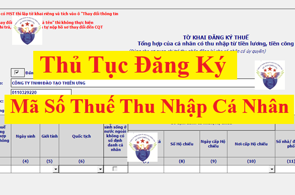

Hướng dẫn làm hồ sơ, thủ tục đăng ký mã số thuế cá nhân cho người lao động mới nhất năm 2026 theo Quyết định số 155/QĐ-BTC
Lưu ý: Nội dung trong bài viết này được Công ty đào tạo Kế Toán Diệu Tâm chia sẻ về thủ tục hành chính: Đăng ký thuế lần đầu đối với người nộp thuế là cá nhân có thu nhập thuộc diện chịu thuế thu nhập cá nhân hoặc có nghĩa vụ với ngân sách nhà nước (trừ cá nhân kinh doanh)
Còn đối với thủ tục hành chính: Đăng ký thuế lần đầu đối với người nộp thuế là hộ gia đình, cá nhân có hoạt động sản xuất, kinh doanh không thuộc đối tượng đăng ký kinh doanh qua cơ quan đăng ký kinh doanh. Ví dụ như: cá nhân cho thuê tài sản chẳng hạn thì các bạn vui lòng xem tại đây:
Người lao động có thể đăng ký mã số thuế thu nhập cá nhân bằng 1 trong 2 cách:
+ Cách 1: đăng ký thuế trực tiếp với cơ quan thuế
+ Cách 2: ủy quyền đăng ký thuế cho cơ quan chi trả thu nhập (doanh nghiệp)
+ Cách 2: ủy quyền đăng ký thuế cho cơ quan chi trả thu nhập (doanh nghiệp)
Chi tiết từng thủ tục đăng ký MST TNCN trong từng trường hợp như sau:
1. Trường hợp cá nhân ủy quyền đăng ký thuế cho cơ quan chi trả thu nhập.
1.1. Trình tự thực hiện:
+ Bước 1: Cá nhân có ủy quyền cho cơ quan chi trả thu nhập đăng ký thuế gửi hồ sơ cho cơ quan chi trả thu nhập.
Trường hợp cá nhân nộp thuế thu nhập cá nhân tại nhiều cơ quan chi trả thu nhập trong cùng một kỳ nộp thuế, cá nhân chỉ ủy quyền đăng ký thuế tại một cơ quan chi trả thu nhập và thông báo số định danh cá nhân của cá nhân (đối với người Việt Nam) hoặc mã số thuế đã được cấp (đối với người nước ngoài) với các cơ quan chi trả thu nhập khác để sử dụng vào việc khấu trừ, kê khai, nộp thuế.
Cơ quan chi trả thu nhập tổng hợp và gửi tờ khai đăng ký thuế mẫu số 05-ĐK-TH-TCT ban hành kèm theo Thông tư số 86/2024/TT-BTC ngày 23/12/2024 của Bộ Tài chính chậm nhất là 10 ngày làm việc kể từ ngày phát sinh nghĩa vụ thuế trong trường hợp cá nhân chưa có mã số thuế, gửi cơ quan thuế quản lý trực tiếp cơ quan chi trả thu nhập để đăng ký thuế thay cho cá nhân có ủy quyền.
++ Đối với trường hợp hồ sơ đăng ký thuế điện tử: Người nộp thuế (NNT) truy cập vào Cổng thông tin điện tử mà người nộp thuế lựa chọn (Cổng thông tin điện tử của Tổng cục Thuế/Cổng thông tin điện tử của cơ quan nhà nước có thẩm quyền bao gồm Cổng dịch vụ công quốc gia, Cổng dịch vụ công cấp Bộ, cấp tỉnh theo quy định về thực hiện cơ chế một cửa, một cửa liên thông trong giải quyết thủ tục hành chính và đã được kết nối với Cổng thông tin điện tử của Tổng cục Thuế/Cổng thông tin của tổ chức cung cấp dịch vụ T-VAN) để khai tờ khai và gửi kèm các hồ sơ theo quy định dưới dạng điện tử (nếu có), ký điện tử và gửi đến cơ quan thuế qua Cổng thông tin điện tử mà người nộp thuế lựa chọn;
Chi tiết cách làm tờ khai đăng ký thuế mẫu 05-ĐK-TH-TCT trên phần mềm HTKK và nộp qua mạng thì các bạn xem tại đây nhé: Cách đăng ký mã số thuế cá nhân 2026 qua mạng
+ Bước 2. Cơ quan thuế tiếp nhận:++ Đối với trường hợp hồ sơ đăng ký thuế điện tử: Người nộp thuế (NNT) truy cập vào Cổng thông tin điện tử mà người nộp thuế lựa chọn (Cổng thông tin điện tử của Tổng cục Thuế/Cổng thông tin điện tử của cơ quan nhà nước có thẩm quyền bao gồm Cổng dịch vụ công quốc gia, Cổng dịch vụ công cấp Bộ, cấp tỉnh theo quy định về thực hiện cơ chế một cửa, một cửa liên thông trong giải quyết thủ tục hành chính và đã được kết nối với Cổng thông tin điện tử của Tổng cục Thuế/Cổng thông tin của tổ chức cung cấp dịch vụ T-VAN) để khai tờ khai và gửi kèm các hồ sơ theo quy định dưới dạng điện tử (nếu có), ký điện tử và gửi đến cơ quan thuế qua Cổng thông tin điện tử mà người nộp thuế lựa chọn;
Chi tiết cách làm tờ khai đăng ký thuế mẫu 05-ĐK-TH-TCT trên phần mềm HTKK và nộp qua mạng thì các bạn xem tại đây nhé: Cách đăng ký mã số thuế cá nhân 2026 qua mạng
++ Đối với hồ sơ bằng giấy:
+++ Trường hợp hồ sơ được nộp trực tiếp tại cơ quan thuế: Công chức thuế kiểm tra hồ sơ đăng ký thuế. Trường hợp hồ sơ đầy đủ theo quy định, công chức thuế tiếp nhận và đóng dấu tiếp nhận vào hồ sơ đăng ký thuế, ghi rõ ngày nhận hồ sơ, số lượng tài liệu theo bảng kê danh mục hồ sơ; lập phiếu tiếp nhận và hẹn trả kết quả, thời hạn xử lý hồ sơ đã tiếp nhận. Trường hợp hồ sơ không đầy đủ theo quy định, công chức thuế không tiếp nhận và hướng dẫn người nộp thuế hoàn thiện hồ sơ.
+++ Trường hợp hồ sơ gửi bằng đường bưu chính: Công chức thuế đóng dấu tiếp nhận, ghi ngày nhận hồ sơ vào hồ sơ và ghi số văn thư của cơ quan thuế. Trường hợp hồ sơ không đầy đủ cần phải giải trình, bổ sung thông tin, tài liệu, cơ quan thuế thông báo cho người nộp thuế theo mẫu số 01/TB-BSTT-NNT tại Phụ lục II ban hành kèm theo Nghị định số 126/2020/NĐ-CP ngày 19/10/2020 của Chính phủ trong thời hạn 02 (hai) ngày làm việc kể từ ngày tiếp nhận hồ sơ.
+++ Trường hợp hồ sơ gửi bằng đường bưu chính: Công chức thuế đóng dấu tiếp nhận, ghi ngày nhận hồ sơ vào hồ sơ và ghi số văn thư của cơ quan thuế. Trường hợp hồ sơ không đầy đủ cần phải giải trình, bổ sung thông tin, tài liệu, cơ quan thuế thông báo cho người nộp thuế theo mẫu số 01/TB-BSTT-NNT tại Phụ lục II ban hành kèm theo Nghị định số 126/2020/NĐ-CP ngày 19/10/2020 của Chính phủ trong thời hạn 02 (hai) ngày làm việc kể từ ngày tiếp nhận hồ sơ.
++ Đối với hồ sơ điện tử:
Cơ quan thuế thực hiện tiếp nhận hồ sơ qua Cổng thông tin điện tử của Tổng cục Thuế, thực hiện kiểm tra, giải quyết hồ sơ thông qua hệ thống xử lý dữ liệu điện tử của cơ quan thuế.
+++ Tiếp nhận hồ sơ: Cổng thông tin điện tử của Tổng cục Thuế gửi thông báo tiếp nhận hồ sơ cho NNT qua Cổng thông tin điện tử mà người nộp thuế lựa chọn lập và gửi hồ sơ (Cổng thông tin điện tử của Tổng cục Thuế/Cổng thông tin điện tử của cơ quan nhà nước có thẩm quyền hoặc tổ chức cung cấp dịch vụ T-VAN) chậm nhất 15 phút kể từ khi nhận được hồ sơ đăng ký thuế điện tử của người nộp thuế.
+++ Kiểm tra, giải quyết hồ sơ: Cơ quan thuế thực hiện kiểm tra, giải quyết hồ sơ của người nộp thuế theo quy định của pháp luật về đăng ký thuế và trả kết quả giải quyết qua Cổng thông tin điện tử mà người nộp thuế lựa chọn lập và gửi hồ sơ.
++++ Trường hợp hồ sơ đầy đủ, đúng thủ tục theo quy định: Cơ quan thuế gửi kết quả giải quyết hồ sơ đến Cổng thông tin điện tử mà người nộp thuế lựa chọn lập và gửi hồ sơ theo thời hạn quy định tại Thông tư số 86/2024/TT-BTC ngày 23/12/2024 của Bộ Tài chính.
++++ Trường hợp hồ sơ chưa đầy đủ, chưa đúng thủ tục theo quy định: Cơ quan thuế gửi thông báo về việc không chấp nhận hồ sơ, gửi đến Cổng thông tin điện tử mà người nộp thuế lựa chọn lập và gửi hồ sơ trong thời hạn 02 (hai) ngày làm việc kể từ ngày ghi trên Thông báo tiếp nhận hồ sơ.
1.2. Cách thức thực hiện:
+++ Kiểm tra, giải quyết hồ sơ: Cơ quan thuế thực hiện kiểm tra, giải quyết hồ sơ của người nộp thuế theo quy định của pháp luật về đăng ký thuế và trả kết quả giải quyết qua Cổng thông tin điện tử mà người nộp thuế lựa chọn lập và gửi hồ sơ.
++++ Trường hợp hồ sơ đầy đủ, đúng thủ tục theo quy định: Cơ quan thuế gửi kết quả giải quyết hồ sơ đến Cổng thông tin điện tử mà người nộp thuế lựa chọn lập và gửi hồ sơ theo thời hạn quy định tại Thông tư số 86/2024/TT-BTC ngày 23/12/2024 của Bộ Tài chính.
++++ Trường hợp hồ sơ chưa đầy đủ, chưa đúng thủ tục theo quy định: Cơ quan thuế gửi thông báo về việc không chấp nhận hồ sơ, gửi đến Cổng thông tin điện tử mà người nộp thuế lựa chọn lập và gửi hồ sơ trong thời hạn 02 (hai) ngày làm việc kể từ ngày ghi trên Thông báo tiếp nhận hồ sơ.
+ Nộp trực tiếp tại trụ sở Cơ quan thuế;
+ Hoặc gửi qua hệ thống bưu chính;
+ Hoặc bằng phương thức điện tử qua Cổng thông tin điện tử của Tổng cục Thuế/Cổng thông tin điện tử của cơ quan nhà nước có thẩm quyền bao gồm Cổng dịch vụ công quốc gia, Cổng dịch vụ công cấp Bộ, cấp tỉnh theo quy định về thực hiện cơ chế một cửa, một cửa liên thông trong giải quyết thủ tục hành chính và đã được kết nối với Cổng thông tin điện tử của Tổng cục Thuế/Cổng thông tin của tổ chức cung cấp dịch vụ T-VAN theo quy định tại Thông tư số 19/2021/TT-BTC ngày 18/3/2021 và Thông tư số 46/2024/TT-BTC ngày 09/07/2024 sửa đổi, bổ sung một số điều của Thông tư số 19/2021/TT-BTC ngày 18/3/2021 của Bộ Tài chính hướng dẫn giao dịch điện tử trong lĩnh vực thuế.
+ Hoặc gửi qua hệ thống bưu chính;
+ Hoặc bằng phương thức điện tử qua Cổng thông tin điện tử của Tổng cục Thuế/Cổng thông tin điện tử của cơ quan nhà nước có thẩm quyền bao gồm Cổng dịch vụ công quốc gia, Cổng dịch vụ công cấp Bộ, cấp tỉnh theo quy định về thực hiện cơ chế một cửa, một cửa liên thông trong giải quyết thủ tục hành chính và đã được kết nối với Cổng thông tin điện tử của Tổng cục Thuế/Cổng thông tin của tổ chức cung cấp dịch vụ T-VAN theo quy định tại Thông tư số 19/2021/TT-BTC ngày 18/3/2021 và Thông tư số 46/2024/TT-BTC ngày 09/07/2024 sửa đổi, bổ sung một số điều của Thông tư số 19/2021/TT-BTC ngày 18/3/2021 của Bộ Tài chính hướng dẫn giao dịch điện tử trong lĩnh vực thuế.
1.3. Thành phần, số lượng hồ sơ:
+ Thành phần hồ sơ, gồm:
++ Hồ sơ đăng ký thuế của cá nhân gồm gửi cho cơ quan chi trả thu nhập: Văn bản ủy quyền Mẫu số 41/UQ-ĐKT ban hành kèm theo Thông tư số 86/2024/TT-BTC ngày 23/12/2024 của Bộ Tài chính; bản sao Hộ chiếu còn hiệu lực đối với cá nhân là người có quốc tịch nước ngoài hoặc người có quốc tịch Việt Nam sinh sống tại nước ngoài) cho cơ quan chi trả thu nhập.
Chi tiết về Mẫu số 41/UQ-ĐKT thì các bạn xem và tải về tại đây nhé: Mẫu số 41/UQ-ĐKT theo Thông tư số 86/2024/TT-BTC
++ Cơ quan chi trả thu nhập có trách nhiệm tổng hợp thông tin đăng ký thuế của cá nhân vào tờ khai đăng ký thuế mẫu số 05-ĐK-TH-TCT ban hành kèm theo Thông tư số 86/2024/TT-BTC ngày 23/12/2024 của Bộ Tài chính gửi cơ quan thuế quản lý trực tiếp cơ quan chi trả thu nhập.
Chi tiết về Mẫu số 05-ĐK-TH-TC thì các bạn xem và tải về tại đây nhé: Mẫu số 05-ĐK-TH-TCT theo Thông tư số 86/2024/TT-BTC
1.4. Thời hạn giải quyết: 03 (ba) ngày làm việc kể từ ngày cơ quan thuế nhận được hồ sơ đăng ký thuế đầy đủ theo quy định.

1.5. Đối tượng thực hiện thủ tục hành chính: Cơ quan chi trả thu nhập.
1.6. Cơ quan thực hiện thủ tục hành chính: Cục Thuế/Chi cục Thuế.
1.7. Kết quả thực hiện thủ tục hành chính: Thông báo mã số thuế cá nhân mẫu số 14-MST ban hành kèm theo Thông tư số 86/2024/TT-BTC ngày 23/12/2024 của Bộ Tài chính.
1.8. Phí, lệ phí: Không.
1.9. Tên mẫu đơn, mẫu tờ khai:
+ Văn bản ủy quyền Mẫu số 41/UQ-ĐKT ban hành kèm theo Thông tư số 86/2024/TT-BTC ngày 23/12/2024 của Bộ Tài chính
+ Tờ khai đăng ký thuế mẫu số 05-ĐK-TH-TCT ban hành kèm theo Thông tư số 86/2024/TT-BTC ngày 23/12/2024 của Bộ Tài chính.
1.10. Yêu cầu, điều kiện thực hiện thủ tục hành chính:
+ Tờ khai đăng ký thuế mẫu số 05-ĐK-TH-TCT ban hành kèm theo Thông tư số 86/2024/TT-BTC ngày 23/12/2024 của Bộ Tài chính.
+ Cá nhân/đại diện hộ gia đình là người Việt Nam phải kê khai các thông tin về họ và tên, ngày tháng năm sinh, số định danh cá nhân của mình chính xác so với các thông tin được lưu trữ tại Cơ sở dữ liệu quốc gia về dân cư, trường hợp chưa được cấp số định danh cá nhân thì cá nhân phải liên hệ với cơ quan Công an cấp xã để thu thập thông tin vào Cơ sở dữ liệu quốc gia về dân cư và cấp số định danh cá nhân trước khi thực hiện thủ tục đăng ký thuế.
+ Trường hợp người nộp thuế lựa chọn và gửi hồ sơ đến cơ quan thuế thông qua giao dịch điện tử thì phải tuân thủ đúng các quy định của pháp luật về giao dịch điện tử đồng thời đăng ký và đảm bảo đầy đủ các điều kiện thực hiện giao dịch điện tử trong lĩnh vực thuế theo quy định tại Thông tư số 19/2021/TT-BTC ngày 18/3/2021 của Bộ trưởng Bộ Tài chính và Thông tư số 46/2024/TT-BTC ngày 09/07/2024 sửa đổi, bổ sung một số điều của Thông tư số 19/2021/TT-BTC ngày 18/3/2021 của Bộ Tài chính hướng dẫn giao dịch điện tử trong lĩnh vực thuế.
1.11. Căn cứ pháp lý của thủ tục hành chính:
+ Trường hợp người nộp thuế lựa chọn và gửi hồ sơ đến cơ quan thuế thông qua giao dịch điện tử thì phải tuân thủ đúng các quy định của pháp luật về giao dịch điện tử đồng thời đăng ký và đảm bảo đầy đủ các điều kiện thực hiện giao dịch điện tử trong lĩnh vực thuế theo quy định tại Thông tư số 19/2021/TT-BTC ngày 18/3/2021 của Bộ trưởng Bộ Tài chính và Thông tư số 46/2024/TT-BTC ngày 09/07/2024 sửa đổi, bổ sung một số điều của Thông tư số 19/2021/TT-BTC ngày 18/3/2021 của Bộ Tài chính hướng dẫn giao dịch điện tử trong lĩnh vực thuế.
+ Luật Quản lý thuế ngày 13/06/2019; Luật sửa đổi, bổ sung một số điều của luật chứng khoán, luật kế toán, luật kiểm toán độc lập, luật ngân sách nhà nước, luật quản lý, sử dụng, tài sản công, luật quản lý thuế, luật thuế thu nhập cá nhân, luật dự trữ quốc gia, luật xử lý vi phạm hành chính ngày 29/11/2024;
+ Thông tư số 19/2021/TT-BTC ngày 18/3/2021 của Bộ Tài chính hướng dẫn Giao dịch điện tử trong lĩnh vực thuế; Thông tư số 46/2024/TT-BTC ngày 09/07/2024 của Bộ Tài chính sửa đổi, bổ sung một số điều của Thông tư số 19/2021/TT-BTC ngày 18/3/2021 hướng dẫn giao dịch điện tử trong lĩnh vực thuế.
+ Thông tư số 86/2024/TT-BTC ngày 23/12/2024 của Bộ Tài chính quy định về đăng ký thuế.
+ Thông tư số 19/2021/TT-BTC ngày 18/3/2021 của Bộ Tài chính hướng dẫn Giao dịch điện tử trong lĩnh vực thuế; Thông tư số 46/2024/TT-BTC ngày 09/07/2024 của Bộ Tài chính sửa đổi, bổ sung một số điều của Thông tư số 19/2021/TT-BTC ngày 18/3/2021 hướng dẫn giao dịch điện tử trong lĩnh vực thuế.
+ Thông tư số 86/2024/TT-BTC ngày 23/12/2024 của Bộ Tài chính quy định về đăng ký thuế.
2. Trường hợp cá nhân đăng ký thuế trực tiếp với cơ quan thuế.
2.1. Trình tự thực hiện:
+ Bước 1: Trong thời hạn 10 ngày làm việc kể từ ngày: Phát sinh nghĩa vụ thuế thu nhập cá nhân hoặc phát sinh nghĩa vụ khác với ngân sách nhà nước, người nộp thuế (NNT) chuẩn bị hồ sơ đăng ký thuế đầy đủ theo đúng quy định, gửi đến cơ quan thuế để làm thủ tục đăng ký thuế theo nơi nộp hồ sơ như sau:
++ Tại Cục Thuế nơi cá nhân làm việc đối với cá nhân cư trú có thu nhập từ tiền lương, tiền công do các tổ chức Quốc tế, Đại sứ quán, Lãnh sự quán tại Việt Nam chi trả nhưng tổ chức này chưa thực hiện khấu trừ thuế;
++ Tại Cục Thuế nơi phát sinh công việc tại Việt Nam đối với cá nhân có thu nhập từ tiền lương, tiền công do các tổ chức, cá nhân trả từ nước ngoài;
++ Tại Chi cục Thuế, Chi cục Thuế khu vực nơi cá nhân cư trú đối với những trường hợp khác.
++ Tại Chi cục Thuế, Chi cục Thuế khu vực nơi hộ gia đình, cá nhân có phát sinh nghĩa vụ với ngân sách nhà nước đối với cá nhân đăng ký thuế thông qua hồ sơ khai thuế.
++ Đối với trường hợp hồ sơ đăng ký thuế điện tử: Người nộp thuế (NNT) truy cập vào Cổng thông tin điện tử mà người nộp thuế lựa chọn (Cổng thông tin điện tử của Tổng cục Thuế/Cổng thông tin điện tử của cơ quan nhà nước có thẩm quyền bao gồm Cổng dịch vụ công quốc gia, Cổng dịch vụ công cấp Bộ, cấp tỉnh theo quy định về thực hiện cơ chế một cửa, một cửa liên thông trong giải quyết thủ tục hành chính và đã được kết nối với Cổng thông tin điện tử của Tổng cục Thuế/Cổng thông tin của tổ chức cung cấp dịch vụ T-VAN) để khai tờ khai và gửi kèm các hồ sơ theo quy định dưới dạng điện tử (nếu có), ký điện tử và gửi đến cơ quan thuế qua Cổng thông tin điện tử mà người nộp thuế lựa chọn;
+ Bước 2: Cơ quan thuế tiếp nhận:++ Tại Cục Thuế nơi phát sinh công việc tại Việt Nam đối với cá nhân có thu nhập từ tiền lương, tiền công do các tổ chức, cá nhân trả từ nước ngoài;
++ Tại Chi cục Thuế, Chi cục Thuế khu vực nơi cá nhân cư trú đối với những trường hợp khác.
++ Tại Chi cục Thuế, Chi cục Thuế khu vực nơi hộ gia đình, cá nhân có phát sinh nghĩa vụ với ngân sách nhà nước đối với cá nhân đăng ký thuế thông qua hồ sơ khai thuế.
++ Đối với trường hợp hồ sơ đăng ký thuế điện tử: Người nộp thuế (NNT) truy cập vào Cổng thông tin điện tử mà người nộp thuế lựa chọn (Cổng thông tin điện tử của Tổng cục Thuế/Cổng thông tin điện tử của cơ quan nhà nước có thẩm quyền bao gồm Cổng dịch vụ công quốc gia, Cổng dịch vụ công cấp Bộ, cấp tỉnh theo quy định về thực hiện cơ chế một cửa, một cửa liên thông trong giải quyết thủ tục hành chính và đã được kết nối với Cổng thông tin điện tử của Tổng cục Thuế/Cổng thông tin của tổ chức cung cấp dịch vụ T-VAN) để khai tờ khai và gửi kèm các hồ sơ theo quy định dưới dạng điện tử (nếu có), ký điện tử và gửi đến cơ quan thuế qua Cổng thông tin điện tử mà người nộp thuế lựa chọn;
++ Đối với hồ sơ bằng giấy;
+++ Trường hợp hồ sơ được nộp trực tiếp tại cơ quan thuế: Công chức thuế kiểm tra hồ sơ đăng ký thuế. Trường hợp hồ sơ đầy đủ theo quy định, công chức thuế tiếp nhận và đóng dấu tiếp nhận vào hồ sơ đăng ký thuế, ghi rõ ngày nhận hồ sơ, số lượng tài liệu theo bảng kê danh mục hồ sơ; lập phiếu tiếp nhận và hẹn trả kết quả, thời hạn xử lý hồ sơ đã tiếp nhận. Trường hợp hồ sơ không đầy đủ theo quy định, công chức thuế không tiếp nhận và hướng dẫn người nộp thuế hoàn thiện hồ sơ.
+++ Trường hợp hồ sơ gửi bằng đường bưu chính: Công chức thuế đóng dấu tiếp nhận, ghi ngày nhận hồ sơ vào hồ sơ và ghi số văn thư của cơ quan thuế. Trường hợp hồ sơ không đầy đủ cần phải giải trình, bổ sung thông tin, tài liệu, cơ quan thuế thông báo cho người nộp thuế theo mẫu số 01/TB-BSTT-NNT tại Phụ lục II ban hành kèm theo Nghị định số 126/2020/NĐ-CP ngày 19/10/2020 của Chính phủ trong thời hạn 02 (hai) ngày làm việc kể từ ngày tiếp nhận hồ sơ.
++ Đối với hồ sơ điện tử:+++ Trường hợp hồ sơ gửi bằng đường bưu chính: Công chức thuế đóng dấu tiếp nhận, ghi ngày nhận hồ sơ vào hồ sơ và ghi số văn thư của cơ quan thuế. Trường hợp hồ sơ không đầy đủ cần phải giải trình, bổ sung thông tin, tài liệu, cơ quan thuế thông báo cho người nộp thuế theo mẫu số 01/TB-BSTT-NNT tại Phụ lục II ban hành kèm theo Nghị định số 126/2020/NĐ-CP ngày 19/10/2020 của Chính phủ trong thời hạn 02 (hai) ngày làm việc kể từ ngày tiếp nhận hồ sơ.
Cơ quan thuế thực hiện tiếp nhận hồ sơ qua Cổng thông tin điện tử của Tổng cục Thuế, thực hiện kiểm tra, giải quyết hồ sơ thông qua hệ thống xử lý dữ liệu điện tử của cơ quan thuế.
+++ Tiếp nhận hồ sơ: Cổng thông tin điện tử của Tổng cục Thuế gửi thông báo tiếp nhận hồ sơ cho NNT qua Cổng thông tin điện tử mà người nộp thuế lựa chọn lập và gửi hồ sơ (Cổng thông tin điện tử của Tổng cục Thuế/Cổng thông tin điện tử của cơ quan nhà nước có thẩm quyền hoặc tổ chức cung cấp dịch vụ T-VAN) chậm nhất 15 phút kể từ khi nhận được hồ sơ đăng ký thuế điện tử của người nộp thuế.
+++ Kiểm tra, giải quyết hồ sơ: Cơ quan thuế thực hiện kiểm tra, giải quyết hồ sơ của người nộp thuế theo quy định của pháp luật về đăng ký thuế và trả kết quả giải quyết qua Cổng thông tin điện tử mà người nộp thuế lựa chọn lập và gửi hồ sơ.
+++ Kiểm tra, giải quyết hồ sơ: Cơ quan thuế thực hiện kiểm tra, giải quyết hồ sơ của người nộp thuế theo quy định của pháp luật về đăng ký thuế và trả kết quả giải quyết qua Cổng thông tin điện tử mà người nộp thuế lựa chọn lập và gửi hồ sơ.
++++ Trường hợp hồ sơ đầy đủ, đúng thủ tục theo quy định: Cơ quan thuế gửi kết quả giải quyết hồ sơ đến Cổng thông tin điện tử mà người nộp thuế lựa chọn lập và gửi hồ sơ theo thời hạn quy định tại Thông tư số 86/2024/TT-BTC ngày 23/12/2024 của Bộ Tài chính.
++++ Trường hợp hồ sơ chưa đầy đủ, chưa đúng thủ tục theo quy định: Cơ quan thuế gửi thông báo về việc không chấp nhận hồ sơ, gửi đến Cổng thông tin điện tử mà người nộp thuế lựa chọn lập và gửi hồ sơ trong thời hạn 02 (hai) ngày làm việc kể từ ngày ghi trên Thông báo tiếp nhận hồ sơ.
2.2. Cách thức thực hiện:
++++ Trường hợp hồ sơ chưa đầy đủ, chưa đúng thủ tục theo quy định: Cơ quan thuế gửi thông báo về việc không chấp nhận hồ sơ, gửi đến Cổng thông tin điện tử mà người nộp thuế lựa chọn lập và gửi hồ sơ trong thời hạn 02 (hai) ngày làm việc kể từ ngày ghi trên Thông báo tiếp nhận hồ sơ.
+ Nộp trực tiếp tại trụ sở Cơ quan thuế;
+ Hoặc gửi qua hệ thống bưu chính;
+ Hoặc bằng phương thức điện tử qua Cổng thông tin điện tử của Tổng cục Thuế/Cổng thông tin điện tử của cơ quan nhà nước có thẩm quyền bao gồm Cổng dịch vụ công quốc gia, Cổng dịch vụ công cấp Bộ, cấp tỉnh theo quy định về thực hiện cơ chế một cửa, một cửa liên thông trong giải quyết thủ tục hành chính và đã được kết nối với Cổng thông tin điện tử của Tổng cục Thuế/Cổng thông tin của tổ chức cung cấp dịch vụ T-VAN theo quy định tại Thông tư số 19/2021/TT-BTC ngày 18/3/2021 và Thông tư số 46/2024/TT-BTC ngày 09/07/2024 sửa đổi, bổ sung một số điều của Thông tư số 19/2021/TT-BTC ngày 18/3/2021 của Bộ Tài chính hướng dẫn giao dịch điện tử trong lĩnh vực thuế.
+ Hoặc gửi qua hệ thống bưu chính;
+ Hoặc bằng phương thức điện tử qua Cổng thông tin điện tử của Tổng cục Thuế/Cổng thông tin điện tử của cơ quan nhà nước có thẩm quyền bao gồm Cổng dịch vụ công quốc gia, Cổng dịch vụ công cấp Bộ, cấp tỉnh theo quy định về thực hiện cơ chế một cửa, một cửa liên thông trong giải quyết thủ tục hành chính và đã được kết nối với Cổng thông tin điện tử của Tổng cục Thuế/Cổng thông tin của tổ chức cung cấp dịch vụ T-VAN theo quy định tại Thông tư số 19/2021/TT-BTC ngày 18/3/2021 và Thông tư số 46/2024/TT-BTC ngày 09/07/2024 sửa đổi, bổ sung một số điều của Thông tư số 19/2021/TT-BTC ngày 18/3/2021 của Bộ Tài chính hướng dẫn giao dịch điện tử trong lĩnh vực thuế.
2.3. Thành phần, số lượng hồ sơ:
+ Thành phần hồ sơ gồm:
++ Đối với cá nhân là người Việt Nam: Tờ khai đăng ký thuế mẫu số 05-ĐK-TCT ban hành kèm theo Thông tư số 86/2024/TT-BTC ngày 23/12/2024 của Bộ Tài chính hoặc hồ sơ khai thuế theo quy định của pháp luật về quản lý thuế trong trường hợp cá nhân đăng ký thuế thông qua hồ sơ khai thuế.
++ Đối với cá nhân là người có quốc tịch nước ngoài hoặc là người có quốc tịch Việt Nam sinh sống tại nước ngoài không có số định danh cá nhân được xác lập từ Cơ sở dữ liệu quốc gia về dân cư:
++ Đối với cá nhân là người có quốc tịch nước ngoài hoặc là người có quốc tịch Việt Nam sinh sống tại nước ngoài không có số định danh cá nhân được xác lập từ Cơ sở dữ liệu quốc gia về dân cư:
+++ Tờ khai đăng ký thuế mẫu số 05-ĐK-TCT ban hành kèm theo Thông tư số 86/2024/TT-BTC ngày 23/12/2024 của Bộ Tài chính hoặc hồ sơ khai thuế theo quy định của pháp luật về quản lý thuế trong trường hợp cá nhân đăng ký thuế thông qua hồ sơ khai thuế.
+++ Bản sao Hộ chiếu còn hiệu lực của cá nhân. Trường hợp cá nhân đã đăng ký và kích hoạt tài khoản định danh điện tử Mức độ 2 theo quy định tại khoản 2 Điều 10, khoản 2 Điều 11 và Điều 14 Nghị định số 69/2024/NĐ-CP để thực hiện thủ tục đăng ký thuế với cơ quan thuế thì không phải nộp bản sao hộ chiếu nếu đã được tích hợp vào tài khoản định danh điện tử.
+++ Bản sao văn bản bổ nhiệm của Tổ chức sử dụng lao động trong trường hợp cá nhân người nước ngoài không cư trú tại Việt Nam theo quy định của pháp luật về thuế thu nhập cá nhân được cử sang Việt Nam làm việc nhưng nhận thu nhập tại nước ngoài.
+++ Bản sao Hộ chiếu còn hiệu lực của cá nhân. Trường hợp cá nhân đã đăng ký và kích hoạt tài khoản định danh điện tử Mức độ 2 theo quy định tại khoản 2 Điều 10, khoản 2 Điều 11 và Điều 14 Nghị định số 69/2024/NĐ-CP để thực hiện thủ tục đăng ký thuế với cơ quan thuế thì không phải nộp bản sao hộ chiếu nếu đã được tích hợp vào tài khoản định danh điện tử.
+++ Bản sao văn bản bổ nhiệm của Tổ chức sử dụng lao động trong trường hợp cá nhân người nước ngoài không cư trú tại Việt Nam theo quy định của pháp luật về thuế thu nhập cá nhân được cử sang Việt Nam làm việc nhưng nhận thu nhập tại nước ngoài.
Chi tiết về Mẫu số 05-ĐK-TH-TC thì các bạn xem và tải về tại đây nhé:
+ Số lượng hồ sơ: 01 (bộ).2.4. Thời hạn giải quyết: 03 (ba) ngày làm việc kể từ ngày cơ quan thuế nhận được hồ sơ đăng ký thuế đầy đủ theo quy định.
2.5. Đối tượng thực hiện thủ tục hành chính: Cá nhân.
2.6. Cơ quan thực hiện thủ tục hành chính: Cục Thuế/Chi cục Thuế.
2.7. Kết quả thực hiện thủ tục hành chính:
+ Đối với cá nhân Việt Nam: Được sử dụng số định danh cá nhân thay cho MST nếu thông tin đăng ký thuế khớp đúng với thông tin trong Cơ sở dữ liệu quốc gia về dân cư; Thông báo MST cá nhân do cơ quan thuế cấp được sử dụng đến hết ngày 30/6/2025.
+ Đối với cá nhân nước ngoài: Thông báo mã số thuế cá nhân.
+ Đối với cá nhân nước ngoài: Thông báo mã số thuế cá nhân.
2.8. Phí, lệ phí: Không.
2.9. Tên mẫu đơn, mẫu tờ khai: Tờ khai đăng ký thuế mẫu số 05-ĐK-TCT ban hành kèm theo Thông tư số 86/2024/TT-BTC ngày 23/12/2024 của Bộ Tài chính.
2.10. Yêu cầu, điều kiện thực hiện thủ tục hành chính:
+ Cá nhân/đại diện hộ gia đình là người Việt Nam phải kê khai các thông tin về họ và tên, ngày tháng năm sinh, số định danh cá nhân của mình chính xác so với các thông tin được lưu trữ tại Cơ sở dữ liệu quốc gia về dân cư, trường hợp chưa được cấp số định danh cá nhân thì cá nhân phải liên hệ với cơ quan Công an cấp xã để thu thập thông tin vào Cơ sở dữ liệu quốc gia về dân cư và cấp số định danh cá nhân trước khi thực hiện thủ tục đăng ký thuế.
+ Trường hợp người nộp thuế lựa chọn và gửi hồ sơ đến cơ quan thuế thông qua giao dịch điện tử thì phải tuân thủ đúng các quy định của pháp luật về giao dịch điện tử đồng thời đăng ký và đảm bảo đầy đủ các điều kiện thực hiện giao dịch điện tử trong lĩnh vực thuế theo quy định tại Thông tư số 19/2021/TT-BTC ngày 18/3/2021 của Bộ trưởng Bộ Tài chính và Thông tư số 46/2024/TT-BTC ngày 09/07/2024 sửa đổi, bổ sung một số điều của Thông tư số 19/2021/TT-BTC ngày 18/3/2021 của Bộ Tài chính hướng dẫn giao dịch điện tử trong lĩnh vực thuế.
2.11. Căn cứ pháp lý của thủ tục hành chính:+ Trường hợp người nộp thuế lựa chọn và gửi hồ sơ đến cơ quan thuế thông qua giao dịch điện tử thì phải tuân thủ đúng các quy định của pháp luật về giao dịch điện tử đồng thời đăng ký và đảm bảo đầy đủ các điều kiện thực hiện giao dịch điện tử trong lĩnh vực thuế theo quy định tại Thông tư số 19/2021/TT-BTC ngày 18/3/2021 của Bộ trưởng Bộ Tài chính và Thông tư số 46/2024/TT-BTC ngày 09/07/2024 sửa đổi, bổ sung một số điều của Thông tư số 19/2021/TT-BTC ngày 18/3/2021 của Bộ Tài chính hướng dẫn giao dịch điện tử trong lĩnh vực thuế.
+ Luật Quản lý thuế ngày 13/06/2019; Luật sửa đổi, bổ sung một số điều của luật chứng khoán, luật kế toán, luật kiểm toán độc lập, luật ngân sách nhà nước, luật quản lý, sử dụng, tài sản công, luật quản lý thuế, luật thuế thu nhập cá nhân, luật dự trữ quốc gia, luật xử lý vi phạm hành chính ngày 29/11/2024; .
+ Thông tư số 19/2021/TT-BTC ngày 18/3/2021 của Bộ Tài chính hướng dẫn Giao dịch điện tử trong lĩnh vực thuế; Thông tư số 46/2024/TT-BTC ngày 09/07/2024 của Bộ Tài chính sửa đổi, bổ sung một số điều của Thông tư số 19/2021/TT-BTC ngày 18/3/2021 hướng dẫn giao dịch điện tử trong lĩnh vực thuế.
+ Thông tư số 86/2024/TT-BTC ngày 23/12/2024 của Bộ Tài chính quy định về đăng ký thuế
+ Thông tư số 19/2021/TT-BTC ngày 18/3/2021 của Bộ Tài chính hướng dẫn Giao dịch điện tử trong lĩnh vực thuế; Thông tư số 46/2024/TT-BTC ngày 09/07/2024 của Bộ Tài chính sửa đổi, bổ sung một số điều của Thông tư số 19/2021/TT-BTC ngày 18/3/2021 hướng dẫn giao dịch điện tử trong lĩnh vực thuế.
+ Thông tư số 86/2024/TT-BTC ngày 23/12/2024 của Bộ Tài chính quy định về đăng ký thuế